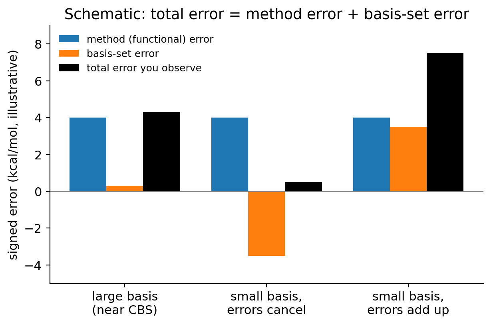

Lecture 10 · Basis-set error vs functional error
Debrief of Experiment 5 and introduction to Experiment 6
After this lecture you should be able to:
- summarize what Experiment 5 showed about hard reactions, -D4, relative errors and training sets;
- read the easy → hard chart across Experiments 3–5 and say what makes a method good overall;
- write the total error of a calculation as a method error plus a basis-set error, and explain how the two can cancel;
- define the basis-set incompleteness error (BSIE) and the basis-set superposition error (BSSE), and write the counterpoise correction;
- explain why B3LYP/6-31G* became the most used level of theory, and why it can be right for the wrong reasons;
- count the basis functions of a molecule in 6-31G*, def2-SVP, cc-pVDZ and pc-1;
- start Experiment 6 knowing what to run and what to look for.
1 Part 1 · Looking back at Experiment 5
This part discusses the trends you probably saw in Experiment 5. If you have not submitted it yet, stop here and come back later.
1.1 The errors exploded
The first thing you probably noticed in Experiment 5 is the scale of the signed error chart. In Experiment 3 the bars were measured in tenths of a kcal/mol; in Experiment 4 in kcal/mol; here many are measured in tens of kcal/mol, and a few in hundreds. No method was accurate for all four reactions. Most methods had at least one error well above chemical accuracy.
What you probably saw, reaction by reaction, and why:
- Hartree–Fock is catastrophic for the two dissociations, 5b (CaO) and especially 5c (H₂SO₄ atomization). It badly underestimates both, because the molecule has much more correlation energy than the separated atoms, and HF has none (Lecture 9). Its error on 5c is so large that it dominates the chart.
- LSDA (SPW92) errs the other way: it overbinds molecules, so its atomization energies are far too large. This is the classic failure of LSDA that motivated GGAs in the first place.
- GGAs (BP86, BLYP, PBE) still make large errors, typically overbinding CaO by many kcal/mol. Their delocalization error and the difficulty of open-shell atoms add up, with no cancellation.
- Hybrids and hybrid meta-GGAs usually reduce the errors, but none of them is uniformly good. The sign of the error changes from reaction to reaction and from functional to functional.
- The two ozone reactions (5a and 5d) are hard for almost everyone. Ozone’s multireference character is not described well by any single-determinant functional, and different functionals miss it in different directions.
1.2 -D4 is not a universal fix
Compare B3LYP with B3LYP-D4 and PBE with PBE-D4. What you probably saw is that -D4 changes these reaction energies only a little, and not always in the right direction. That is exactly what the theory predicts. -D4 adds the dispersion energy between atom pairs. In an atomization or a dissociation, the dispersion energy of the molecule is a tiny fraction of the bond energies, and the errors in Experiment 5 come from somewhere else: self-interaction, static correlation, the description of open-shell atoms. A correction designed for one physical effect cannot repair another.
1.3 Absolute and relative errors
The relative-error chart shows the same errors as a percentage of each reference value. Reaction 5c has the largest reference (602.18 kcal/mol), so its percentage errors look modest even when the absolute errors are the largest of the experiment. For example, a 12 kcal/mol error on 5c is only 2%, but it is twelve times chemical accuracy. A rotational barrier of 1 kcal/mol computed with a 0.3 kcal/mol error looks bad at 30%, but it is chemically harmless. The lesson of Lecture 9 stands: chemistry is decided by absolute energies; relative errors only help compare quantities of very different size.
1.4 The CaO spotlight
The spotlight chart for 5b highlights MN15. You probably saw that MN15 has one of the smallest errors on CaO, while most other functionals miss it by many kcal/mol. This is not proof that MN15 understands CaO better. CaO is part of the database MN15 was fitted to (Yu et al. 2016; Yu and Truhlar 2015), so reproducing it well is what the fit was designed to do. On the other reactions of Experiment 5, MN15 is not exceptional. A functional must be judged on data it was not trained on. This is true of every fitted functional, Minnesota or not.
1.5 From easy to hard
The easy → hard chart puts your Experiments 3, 4 and 5 side by side, with the MAE of each method on a log scale. Three trends usually appear:
- Everything gets worse from left to right. The MAE of a typical method grows by one to two orders of magnitude from Experiment 3 to Experiment 5. Error cancellation does the work in the easy reactions; in the hard ones, the functional is on its own.
- The ranking changes. Methods that look equivalent in Experiment 3 separate in Experiment 4 (dispersion) and again in Experiment 5 (self-interaction and static correlation). LSDA and HF, which hid among the others in Experiment 3, become the worst.
- Modern functionals win on average. The best overall performers are usually among the modern meta-GGAs and hybrid meta-GGAs with good dispersion treatment, such as ωB97M-V, B97M-V or the Minnesota hybrids. But no method wins every reaction, and the margin between the best few is smaller than the spread of errors within each experiment.
Look at the thick line on the chart: your Experiment 3 “draft pick”. Was it still a good choice by Experiment 5? If not, what would you have needed to know in advance? This is the question every computational chemist faces when choosing a method, and it is why we read benchmarks on the subsets closest to our problem (Lecture 14).
There is no best functional, only functionals that are better on average or better for a class of problems. Experiment 5 shows that a functional can be excellent on one reaction and poor on the next, even among reactions with five heavy atoms. As Hopmann put it, “Do not use DFT for mechanisms it cannot handle” (Hopmann 2019).
2 Part 2 · Basis-set error vs functional error
2.1 Two approximations, two errors
Every calculation makes the two approximations of Lecture 1: a finite basis set (approximating Ψ, or the Kohn–Sham orbitals) and an approximate method (approximating Ĥ, here the exchange–correlation functional). Each introduces an error. To separate them, imagine computing the same reaction with the same functional in a complete basis set (CBS). Then
\[ \underbrace{\Delta E^{\text{method/basis}} - \Delta E^\text{ref}}_{\varepsilon_\text{total}} = \underbrace{\Delta E^{\text{method/CBS}} - \Delta E^\text{ref}}_{\varepsilon_\text{method}} + \underbrace{\Delta E^{\text{method/basis}} - \Delta E^{\text{method/CBS}}}_{\varepsilon_\text{basis}} . \tag{1}\]
This is an identity: we have only added and subtracted ΔEmethod/CBS. But it is a useful one.
- εmethod is the error of the functional itself. It does not depend on the basis. It is what benchmark papers report, using large basis sets.
- εbasis is the error caused by the finite basis. It goes to zero as the basis grows, as you saw in Experiment 1.
In practice there are other terms too: the integration grid (Lecture 11), SCF convergence and stability (Lecture 12), the geometry, and the uncertainty of the reference itself. With the settings used in this lab they are usually smaller than the first two, but they are not always negligible.
The two main errors have different origins, and so they have independent signs. When they have the same sign, they add up. When they have opposite signs, they partly cancel, and the total error can be smaller than the method error alone (Figure 1). A small basis can then make a method look better than it really is. This is luck, not accuracy: change the reaction, and the two errors may no longer have opposite signs.

A functional gives these results for one reaction (illustrative numbers, not from any experiment in this course): ΔE = −26.00 kcal/mol with a large, nearly complete basis, and ΔE = −29.50 kcal/mol with a small basis. The reference is −30.00 kcal/mol. Treating the large-basis value as the CBS limit:
- εmethod = −26.00 − (−30.00) = +4.00 kcal/mol;
- εbasis = −29.50 − (−26.00) = −3.50 kcal/mol;
- εtotal = −29.50 − (−30.00) = +0.50 kcal/mol = 4.00 + (−3.50).
The small-basis result is eight times closer to the reference than the large-basis one. But the functional did not get better: two errors of opposite sign cancelled. This is the situation in the middle of Figure 1.
2.2 Basis-set incompleteness error
The basis-set incompleteness error (BSIE) is the error in a total energy caused by the finite basis. For HF and DFT, the variational principle guarantees that total energies decrease toward the CBS limit as the basis grows (Lecture 2). The BSIE of a total energy is therefore always positive. But a reaction energy is a difference, and its BSIE can have either sign. It depends on which side of the reaction is described worse by the basis.
A basis is balanced for a reaction if it describes reactants and products about equally well, so that their BSIEs cancel. Basis sets are usually less balanced when:
- the bonding changes a lot (new bonds formed, lone pairs created or destroyed);
- one side has atoms and the other a molecule, as in an atomization: an atom needs fewer functions than the same atom in a molecule, where the density must polarize into bonds;
- one side has anions or diffuse electrons and the other does not;
- the basis lacks polarization functions on some atoms. Without p functions on hydrogen, for example, the density around H cannot polarize into a bond.
2.3 Basis-set superposition error
The basis-set superposition error (BSSE) appears whenever two fragments come close: two molecules in a dimer, or two distant parts of one molecule. Each fragment is described by its own basis functions, but in the complex it can also use the functions centered on its partner. The isolated fragment has no such help. So the complex is described with an effectively larger basis than the separated fragments, and it comes out artificially too stable. For a dimer, BSSE always makes the binding too strong.
BSSE is not limited to dimers. In a large, compact molecule, an atom can borrow functions from other atoms that are close in space but far along the chain. This intramolecular BSSE favors compact structures over extended ones. It matters, for example, when comparing a branched alkane with a linear one, or a folded conformer with an unfolded one (Kruse and Grimme 2012).
BSSE shrinks quickly as the basis grows, because a fragment that already has a nearly complete basis gains little from its partner. It is a significant problem for double-ζ sets and much smaller for triple-ζ and quadruple-ζ sets. It is a different thing from BSIE, although both are consequences of an incomplete basis.
2.3.1 The counterpoise correction
Boys and Bernardi proposed a simple way to remove most of the BSSE of a dimer AB (Boys and Bernardi 1970): compute the monomers with the same basis they enjoy in the dimer. In practice, the monomer A is computed at its geometry in the dimer, together with the basis functions of B placed at B’s atomic positions, but without B’s nuclei and electrons. These are called ghost atoms. Writing \(E_X^{Y}\) for the energy of fragment X computed in the basis of Y, all at the dimer geometry, the counterpoise-corrected interaction energy is
\[ \Delta E_\text{int}^\text{CP} = E_{AB}^{AB} - E_{A}^{AB} - E_{B}^{AB} . \tag{2}\]
The uncorrected interaction energy uses \(E_A^{A}\) and \(E_B^{B}\) instead. The difference between the two is the counterpoise estimate of the BSSE:
\[ \delta_\text{BSSE} = \big(E_A^{AB} - E_A^{A}\big) + \big(E_B^{AB} - E_B^{B}\big) \le 0 . \tag{3}\]
Each term is negative (or zero), because a larger basis can only lower the energy variationally. If the monomers relax their geometry in the dimer, a small deformation term is added, but the idea is the same. Q-Chem and most other programs can do counterpoise calculations with ghost atoms.
The counterpoise correction is the standard tool for dimers, but it has limits. It is defined for well-separated fragments, not for intramolecular BSSE. And it removes the BSSE but not the BSIE, so a counterpoise-corrected double-ζ result is still far from the CBS limit. For large systems, Kruse and Grimme proposed a geometric counterpoise correction (gCP) that estimates the inter- and intramolecular BSSE from the geometry alone (Kruse and Grimme 2012).
2.4 Why B3LYP/6-31G* became so popular
2.4.1 A brief history
In the 1990s two things happened at once. Becke introduced hybrid functionals (Becke 1993), and in 1994 Stephens, Frisch and co-workers defined B3LYP (Stephens et al. 1994), which quickly became available in the most widely used quantum chemistry program of the time (Gaussian). The 6-31G* basis set of Pople and co-workers (Hariharan and Pople 1973; Francl et al. 1982) was already one of the most used basis sets, in that program and in the textbooks. Computers were slow: a double-ζ basis was what you could afford for a molecule with ten or twenty heavy atoms.
B3LYP/6-31G* was a huge improvement over what organic chemists used before (Hartree–Fock, semi-empirical methods). Geometries were good, reaction energies were often within a few kcal/mol, and calculations finished overnight. Papers that used it worked, so the next papers used it too. B3LYP’s original papers became some of the most cited in all of chemistry, and the combination B3LYP/6-31G* became a de facto standard, often chosen because “everybody uses it” rather than because it was tested for the problem at hand.
2.4.2 Right for the wrong reasons
B3LYP has no dispersion (Lecture 8). With a complete basis, it underbinds dimers and gives too little stability to compact molecules. 6-31G* is a small, unbalanced basis with a large BSSE, which artificially stabilizes compact structures and complexes. The two errors have opposite signs. In many organic systems, the BSSE of 6-31G* partly compensates the missing dispersion of B3LYP, and the combination looks better than B3LYP with a large basis.
Kruse, Goerigk and Grimme analyzed this in detail in 2012 (Kruse et al. 2012). They showed that much of the apparent success of B3LYP/6-31G* comes from this fortuitous cancellation, that it fails badly when the cancellation does not happen, and that adding dispersion and BSSE corrections (or simply using a better basis and a modern functional) removes the problem. Their title says it plainly: the standard B3LYP/6-31G* model chemistry should not be used for molecular thermochemistry. A broader analysis of small basis sets and their error sources was given by Sure, Brandenburg and Grimme (Sure et al. 2016).
The worrying part is not that B3LYP/6-31G* is sometimes accurate. It is that we cannot predict when. Lucky cancellations depend on the reaction. Experiment 6 lets you see this for yourself.
- Concluding that a small basis is “more accurate” because it gave a smaller error once.
- Adding -D4 to a functional used with a small basis without thinking: if BSSE is already mimicking dispersion, adding -D4 counts the attraction twice and can overbind.
- Comparing two functionals with a small basis and drawing conclusions about the functionals. Compare methods at a (nearly) converged basis first.
- Assuming all double-ζ sets are equivalent because they share the label “DZ”.
2.5 Not all double-ζ sets are equal
2.5.1 Four polarized double-ζ sets
All four basis sets of Experiment 6 are “polarized double-ζ”: two functions per valence atomic orbital, plus polarization functions. But they were built differently:
- 6-31G* (Pople) (Hariharan and Pople 1973; Francl et al. 1982): a split-valence set from the 1970s. The star adds one set of d functions on non-hydrogen atoms only. Hydrogen has no polarization functions (that would be 6-31G**). The s and p functions of each valence shell share exponents (“sp shells”), which was a trick to speed up integral evaluation on old computers.
- def2-SVP (Karlsruhe) (Weigend and Ahlrichs 2005): split valence plus polarization on all atoms, including p functions on hydrogen. Optimized mostly at the HF level and designed to be balanced across the periodic table.
- cc-pVDZ (Dunning) (Dunning 1989): correlation consistent. The polarization functions were chosen to recover correlation energy in wave-function methods. Same composition as def2-SVP for first-row atoms, but different exponents and contractions.
- pc-1 (Jensen) (Jensen 2001, 2002): polarization consistent, optimized specifically for DFT. If it is not available, the smallest Karlsruhe set, def2-SV(P), which drops the p functions on hydrogen, is a fallback.
2.5.2 How to count basis functions
The number of basis functions K (or Nbf) sets the cost of a calculation. You can find it in every Q-Chem output, but you should also be able to count it by hand. You need the contracted composition of the basis for each element, written in square brackets as the number of contracted s, p, d, … shells. Each shell contributes:
- s: 1 function;
- p: 3 functions;
- d: 5 functions if spherical (“pure”, 5d), or 6 if Cartesian (6d);
- f: 7 (spherical) or 10 (Cartesian).
The compositions you need for first-row atoms and hydrogen are:
| Basis | H | C, N, O |
|---|---|---|
| 6-31G* | [2s] | [3s2p1d] |
| def2-SVP | [2s1p] | [3s2p1d] |
| cc-pVDZ | [2s1p] | [3s2p1d] |
| pc-1 | [2s1p] | [3s2p1d] |
Two details matter:
- Spherical or Cartesian d. The Pople sets were defined with six Cartesian d functions; the def2, cc and pc sets use five spherical d functions. Many programs follow these conventions by default, but they can be changed. Always check the number your output reports.
- Same count, different quality. Two sets with the same number of contracted functions can differ in the number of primitive Gaussians in each contraction and in the exponents. That affects both the accuracy and the cost of computing the integrals.
Water, H₂O. One O and two H.
- 6-31G*: O = 3 s + 2 × 3 p + 1 × 6 d (Cartesian) = 3 + 6 + 6 = 15; each H = 2. Total = 15 + 2 × 2 = 19 (or 18 with spherical d).
- def2-SVP, cc-pVDZ, pc-1: O = 3 + 6 + 5 = 14; each H = 2 + 3 = 5. Total = 14 + 2 × 5 = 24.
Ethene, C₂H₄. Two C and four H.
- 6-31G*: 2 × 15 + 4 × 2 = 38 (or 36 with spherical d).
- def2-SVP, cc-pVDZ, pc-1: 2 × 14 + 4 × 5 = 28 + 20 = 48.
The difference comes almost entirely from hydrogen. In 6-31G* each H has 2 functions; in the other three it has 5, because of the p polarization functions. The more hydrogen atoms a molecule has, the bigger the gap. In Experiment 6 you will do the same count for cyclohexene and compare it with your outputs.
Since cost grows as a power of K (Experiment 1), a basis with 25% more functions can cost roughly twice as much. That was a real advantage of 6-31G* in the 1990s. Today it is rarely a good reason.
3 Experiment 6 briefing
3.1 The goal
Experiment 6 asks a simple question: is B3LYP/6-31G* special? You will run B3LYP and B3LYP-D4 with four polarized double-ζ basis sets and compare them with the def2-TZVP results you already have from Experiments 4 and 5.
| Reaction | Description | ΔEref (kcal/mol) |
|---|---|---|
| 4a | ethene + butadiene → cyclohexene (Diels–Alder) | −45.40 |
| 4b | n-hexane → neohexane | −2.49 |
| 5b | CaO → Ca + O | 96.15 |
The three reactions were chosen because they respond to small basis sets in very different ways. Your job is to find out how, and to explain why.
3.2 Methods and jobs
- Functionals: B3LYP and B3LYP-D4.
- Basis sets: 6-31G*, def2-SVP, cc-pVDZ and pc-1, plus def2-TZVP as the comparison.
- Eight molecules × 2 functionals × 4 small basis sets = 64 new jobs. They are all small; running one basis set at a time works well.
- The def2-TZVP energies are not recomputed: the Import button on the results form copies your B3LYP and B3LYP-D4/def2-TZVP energies from Experiments 4 and 5 (from this browser). If you worked on another computer, load your saved files on those pages first.
- For every job, record the total energy and the number of basis functions. The basis-size table uses them to compare the four sets for cyclohexene.
3.3 What to watch out for
- Think in terms of Equation 1. For each reaction, the def2-TZVP result is your best estimate of the B3LYP method error. The difference between a small-basis result and the def2-TZVP result estimates the basis-set error. Ask whether the two have the same or opposite signs.
- The anomaly spotter. The spot the anomaly chart asks you to flag cells where a small basis does better than def2-TZVP. Flag them before you explain them, then ask, for each one: is this a better description, or a cancellation of errors?
- -D4 with small basis sets. Ask whether BSSE and -D4 describe the same attraction or different ones, and what that implies when both are present.
- CaO. Ca is a period-4 element with a large, polarizable electron cloud. Think about how well each double-ζ set might describe it, and remember that the products are atoms.
- pc-1. If
BASIS = pc-1is not available on the server, use def2-SV(P) and say so in your report. - Optional. Run the three reactions with ωB97M-V/6-31G* and compare with your ωB97M-V/def2-TZVP results. Does a modern functional benefit from the small basis the same way?
- Lock in your predictions on the experiment page before you run anything.
3.4 Key points
- In Experiment 5, errors grew to tens of kcal/mol for hard reactions; HF and LSDA failed in opposite directions on dissociations, and ozone was hard for nearly everyone.
- -D4 corrects dispersion only; it does not fix self-interaction, static correlation or open-shell atoms.
- MN15’s good result on CaO comes from its training set. Judge a functional on data it was not fitted to.
- Total error = method error + basis-set error (+ smaller terms). The two have independent signs and can cancel.
- BSIE is the error from a finite basis; BSSE is the artificial stabilization of a complex (or a compact molecule) that borrows its partner’s basis functions. Both shrink as the basis grows.
- The counterpoise correction computes the monomers in the full dimer basis using ghost atoms: \(\Delta E^\text{CP}_\text{int} = E_{AB}^{AB} - E_A^{AB} - E_B^{AB}\).
- B3LYP/6-31G* became popular for historical and practical reasons. Its successes often come from BSSE compensating missing dispersion, a cancellation that is unpredictable.
- To count basis functions, add up the contracted shells of each atom: s = 1, p = 3, d = 5 (spherical) or 6 (Cartesian). 6-31G* has no polarization on H, so it is smaller than def2-SVP, cc-pVDZ and pc-1.
3.5 Study questions
- Why does -D4 barely change the error of B3LYP on the atomization of H₂SO₄?
- A functional has errors of +0.3, +2.5 and +25 kcal/mol in Experiments 3, 4 and 5. Another has +0.5, +1.5 and +8. Which would you choose for a new organic reaction, and what else would you want to know?
- Using Equation 1, a method gives ΔE = 10.0 kcal/mol at the CBS limit and 12.5 kcal/mol with a small basis; the reference is 12.0 kcal/mol. Compute εmethod, εbasis and εtotal. Is the small-basis result trustworthy?
- Explain the difference between BSIE and BSSE. Which one can be corrected with the counterpoise method?
- Write the counterpoise-corrected interaction energy for a water dimer. Which calculations do you need, and which use ghost atoms?
- Why is the counterpoise estimate of the BSSE (Equation 3) always negative or zero?
- Explain how the BSSE of 6-31G* and the missing dispersion of B3LYP can cancel. Give an example of a reaction where you would expect them not to cancel.
- Count the basis functions of methanol (CH₃OH) in 6-31G* (Cartesian d) and in def2-SVP.
- Why does the difference in size between 6-31G* and def2-SVP grow with the number of hydrogen atoms?
- A colleague reports a reaction energy with B3LYP-D4/6-31G* that agrees with experiment within 0.5 kcal/mol. What would you ask before believing that the method is reliable for this reaction?
3.6 Further reading
- H. Kruse, L. Goerigk and S. Grimme, “Why the standard B3LYP/6-31G* model chemistry should not be used in DFT calculations of molecular thermochemistry: understanding and correcting the problem” (Kruse et al. 2012).
- S. F. Boys and F. Bernardi, the original counterpoise paper (Boys and Bernardi 1970).
- R. Sure, J. G. Brandenburg and S. Grimme, “Small atomic orbital basis set first-principles quantum chemical methods for large molecular and periodic systems: a critical analysis of error sources” (Sure et al. 2016).
- F. Jensen, “Atomic orbital basis sets” (Jensen 2013). A review of basis-set families and how they are built.
- P. Morgante and R. Peverati, “The devil in the details” (Morgante and Peverati 2020).